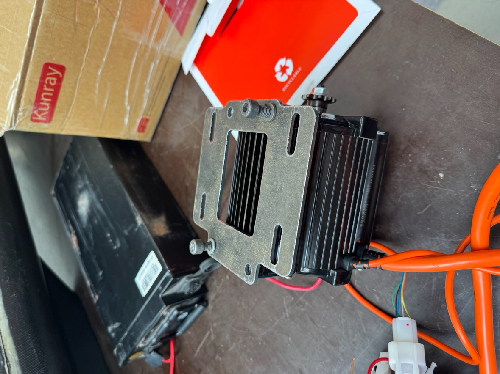
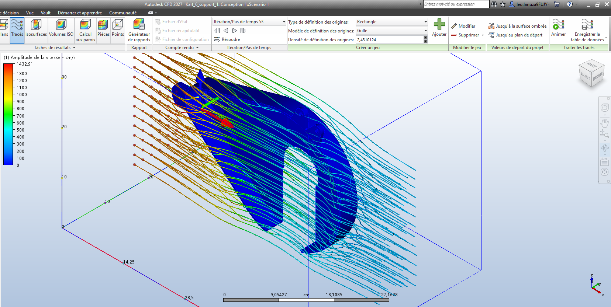

A kart designed around the full vehicle
The conversion was approached as a vehicle system rather than a motor swap. With a 64.3 kg kart mass and 129.3 kg total mass including a 65 kg driver, the centre of gravity was positioned 425 mm from the rear axle, giving a 41/59 front/rear static distribution.
Structural and thermal iteration
The original motor-support geometry had a 70 mm lever arm, a 105 N·m bending moment and an estimated 233.3 MPa stress: marginal for competition use. Reducing the lever arm to 35 mm halved the moment to 52.5 N·m, reduced the estimated stress to about 117 MPa and raised the safety factor to 2.01.
For the electronics enclosure, CFD at 10 m·s⁻¹ used 236,285 nodes and 989,149 elements. Vent placement removed the dominant stagnation zones; a hybrid 1 mm aluminium skin with a PLA structural skeleton combined ventilation, protection and low mass.


Control, braking and handling
Brake capacity was verified above the calculated tyre-grip torque (307.7 N·m versus 126.6 N·m). Vehicle setup combined −1° camber, 10–13° caster, −1 to −2 mm toe and Ackermann geometry to establish a controlled baseline for dynamic testing.